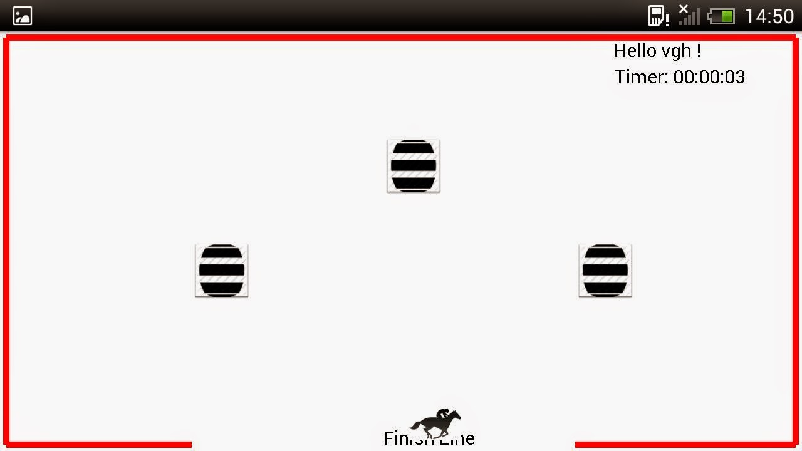
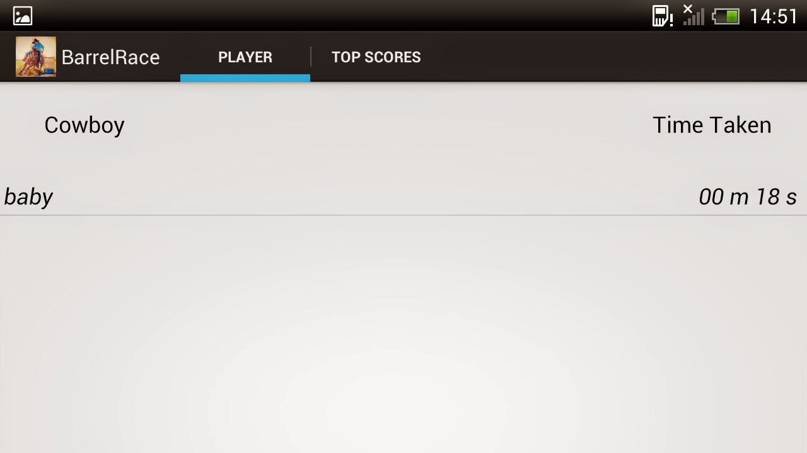
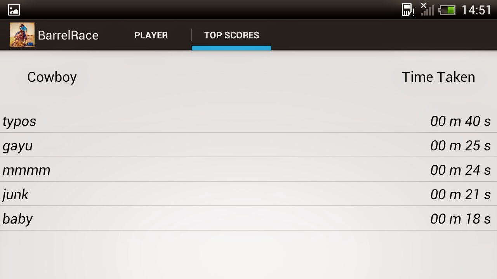

This project was developed with a team of 2 members. I played the role of UX developer combining the work of UX designer and UI developer.
We focused to give an emphasis over user interface and user experience. Keeping in mind to deliver an easy to learn and engaging game application, the design process started with gathering requirements of the game environment such as game rules, number of players, winning criteria and reward point , etc.
Then we brainstormed the different end to end user flow and came up with a rough sketches for the best possible ones as a low fidelity prototype.
Below are the some of the rough sketches that I did to capture the user flow and brainstorm interface design alternatives.
We followed lean startup methodology throughout the project by developing a minimum viable product as quickly as possible. For example, we first built the actual game page of the application, tested it with the users to measure the experience, and learnt to tweak the application with additional elements (keeping track of individual scores of individual players, leaderboards, home page, etc) .
Game Page
Player's scores
Top scores of all players
This project was a platform for me to showcase my interface designing as well as android coding skills. I was that one person in a design team who understands code and its impact while making UX decisions and at the same time not compromise any UX while coding.
As a UX designer, I gathered the requirement of the project and sketched out the chain of user flow. As android developer, designed the main game page of the application which includes front-end and tweaking the android’s accelerometer.
One of the biggest challenge of this project was designing an engaging game that is easy to learn yet rewarding to master.
As a UX designer, empathizing the player’s game expectation was challenging although the basic game rules were pretty easy to learn such as
Winning:
Losing:
Controlling the horse in the game with coordinated movement of the device was key to success. At the initial game design phase, we were in an assumption that giving a wining sensation to the player is very important to craft an engaging experience.
However, user testing revealed that the speed and direction of the horse is controlled by the device i.e. the user himself. So, players were ready to lose first few games to learn the mechanics which eventually encouraged them to try more and more games and finally find their sweet spot to succeed.